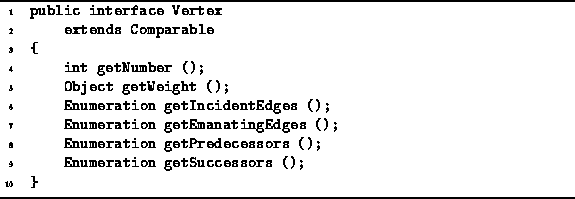

Data Structures and Algorithms
with Object-Oriented Design Patterns in Java
Data Structures and Algorithms
with Object-Oriented Design Patterns in JavaWhat exactly is a vertex? The answer to this question depends on the application. At the very minimum, every vertex in a graph must be distinguishable from every other vertex in that graph. We can do this by numbering consecutively the vertices of a graph. In addition, some applications require vertex-weighted graphs. A weighted vertex can be viewed as one which carries a ``payload''. The payload is an object that represents the weight on the vertex.
Program  defines the Vertex interface.
Since we intend to vertices into containers,
The Vertex interface extends the Comparable interface
defined in Program .
defines the Vertex interface.
Since we intend to vertices into containers,
The Vertex interface extends the Comparable interface
defined in Program .

Program: Vertex interface.
Every vertex in a graph is assigned a unique number. The getNumber method returns the number of a vertex. The getWeight method returns an object that represents the weight associated with a weighted vertex. If the vertex is is unweighted, the getWeight method returns null.
 Copyright © 1998 by Bruno R. Preiss, P.Eng. All rights reserved.
Copyright © 1998 by Bruno R. Preiss, P.Eng. All rights reserved.